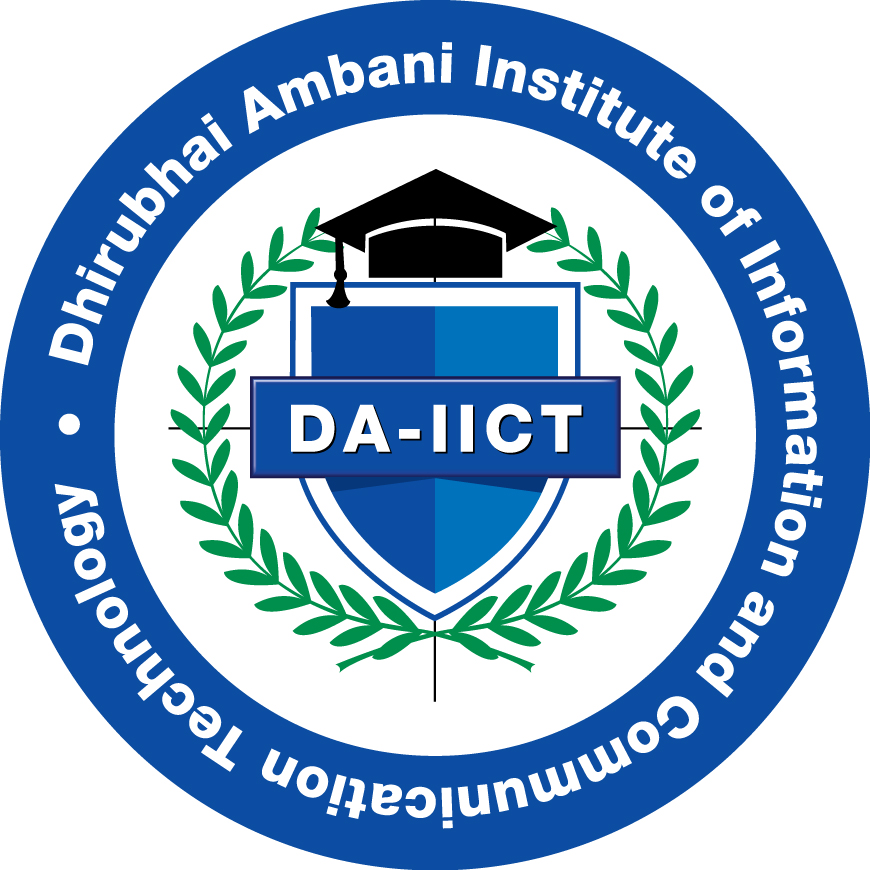

|  |
Ravi Sharma |
|
Dhirubhai Ambani Institute of Information and Communication Technology |
|
|
Email: 202012024@daiict.ac.in |
DOB: November 14, 1999 |
|
Address: A-202, Pinecrest, Godrej Garden City, Ahmedabad-382470 |
| Degree | University/Institute | Year | CPI/Aggregate |
| M.Sc|IT | Dhirubhai Ambani Institute of Information and Communication Technology | 2020-2022 | 8.3 |
| BCA | St. Xavier's College, XICA (Gujarat University) | 2017-2020 | 7.34 |
| HSC | Class XII | Maharaja Agrasen Vidyalaya | 2016-2017 | 8 |
| SSC | Class X | Maharaja Agrasen Vidyalaya | 2014-2015 | 8.4 |
|
Expertise Area/Area(s) of Interest |
Problem Solving, Data Structure and Algorithms, Web Development (Full Stack), Computer Networks, Leadership and Communication Skills |
|
Programming Language(s) |
C, C++, Python, JavaScript |
|
Tools and Technologies |
NodeJS, ExpressJS, ReactJS, React Native, MongoDB, Bootstrap, MySQL, PostgreSQL, Firebase, VS Code |
|
Technical Electives |
Operating system, DBMS, Computer Networks, Data Structures, Discrete Mathematics |
|
Subway |
I worked as a Sandwich Artist for a month in order to understand
the importance and ways of interacting with customers and
handling stressful situations like "rush hour" as well as
working overtime to handle additional workload, i.e.- get a
basic understanding of professionalism.
|
May 2018 - Jun 2018
|
|
DEV IT Ltd. |
Software development intern. As part of our final year project
for BCA, we worked on a Courier Management System developed in
ASP.NET MVC from scratch. It also helped in understanding
theoretical as well as technical aspects of development.
|
Jun 2019 - June 2020
|
|
DA-IICT |
We worked under the guidance of our professor on native app
development for mobile as well as web using native framework,
React Native and developed an app for arranging playdates for
dogs and dog owners.
|
May 2021 - July 2021
|
|
Railway Management
|
Using C++ and CLI, we developed a console based application for Railway Management which was based on OOP concepts included performing CRUD operations on data stored in files along with an ascii oriented basic GUI and menu. |
Nov 2016 - April 2017
|
|
Courier Management System
|
Using ASP.NET, Bootstrap, JQuery and MS SQL we created a courier management system web application accessible to customer, delivery centers,head of the organization and the admin. We applied theoretical principles of the development process as well. |
Jun 2019 - June 2020
|
|
Alien Invasion
|
A nostalgic game based on Asteroid Shooter, but made in Python using OOP concepts and Pygame module. Worked on sprites, menus, sounds, increasing difficulty and locally stored high-scores. |
Sep 2020 - Oct 2020
|
|
C-based Keylogger for Linux systems
|
A C-based keylogger for Linux based on the principles of system files, threads, files and networking that could be used to store all keystrokes locally or send it over a network from the host to the hacker. |
Jan 2021 - May 2021
|
|
Article Publishing Site
|
Inspired by the likes of Medium and somewhat similar to a blogpost, this was made in MEN stack in order to understand the aforementioned technologies better. It allows authors to write articles and basic users or guests to read them and for editors to approve, edit or delete the articles. |
April 2021 - May 2021
|
|
TinDog - Website
|
static web page created using Bootstrap documentation in order to understand the components and classes better and learning about UI/UX best practices as well as making sites responsive and accessible. |
May 2021
|
|
TinDog - App
|
An app written natively using React Native for mobile devices. It enables dog owners to arrange playdates for their dogs based on location and additional criteria but on a match-based system like Tinder. |
May 2021 - July 2021
|
Certificates for outstanding performance in theatre in School Annual
Functions
Certificate of participation in Hackout by Devfolio at DA-IICT, 2019